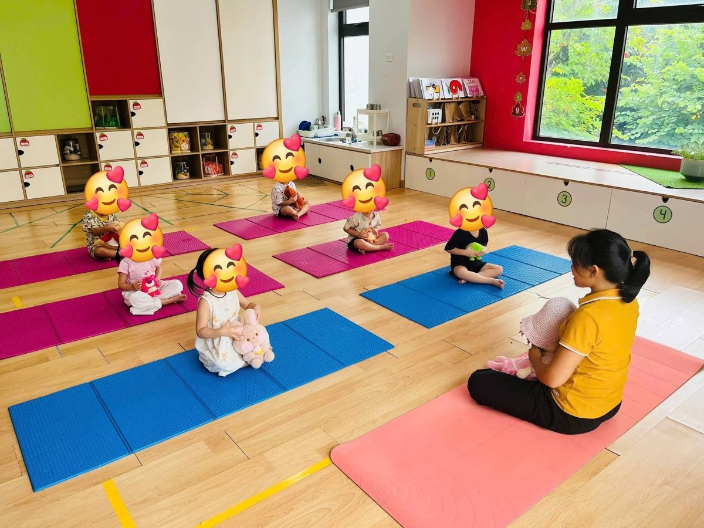
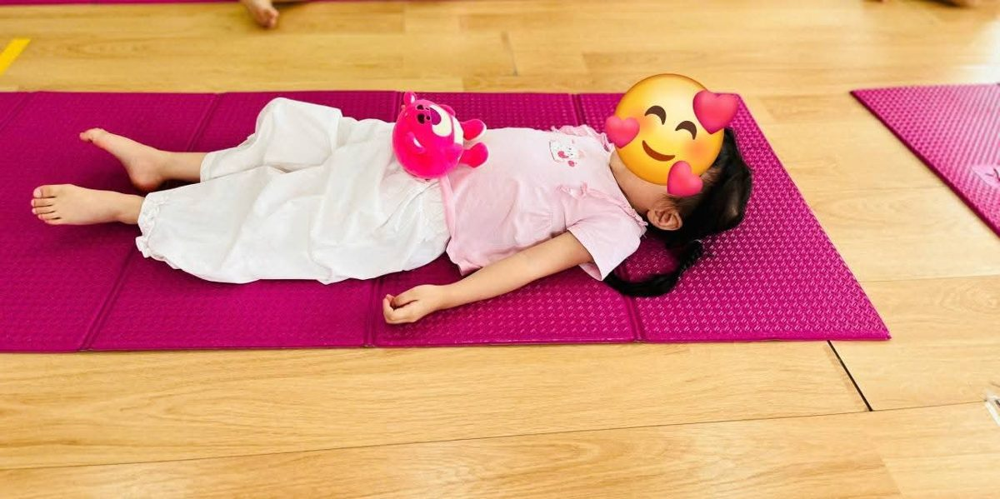
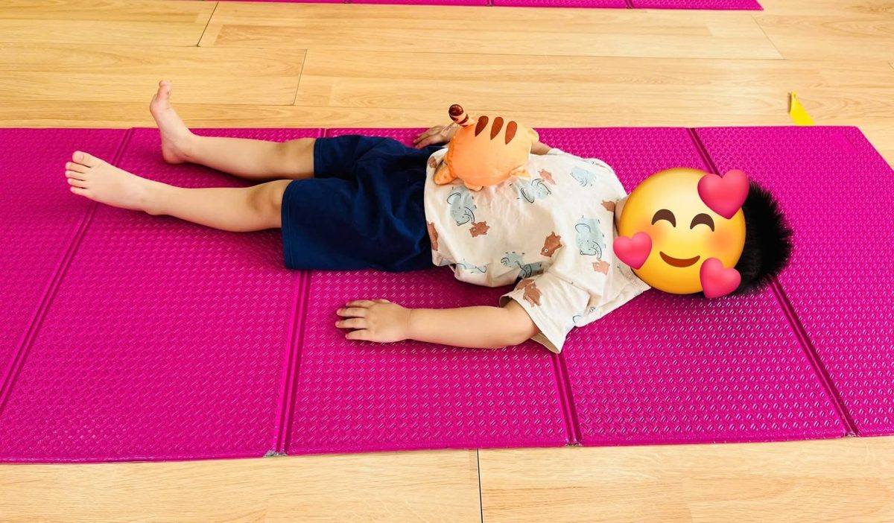
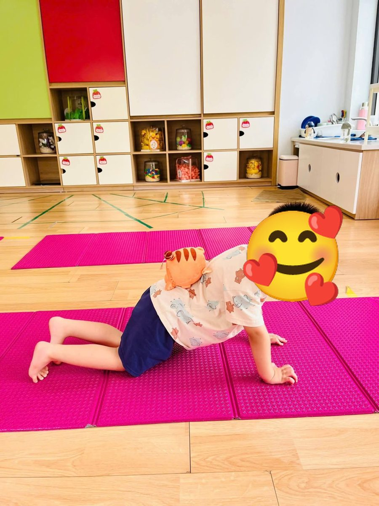
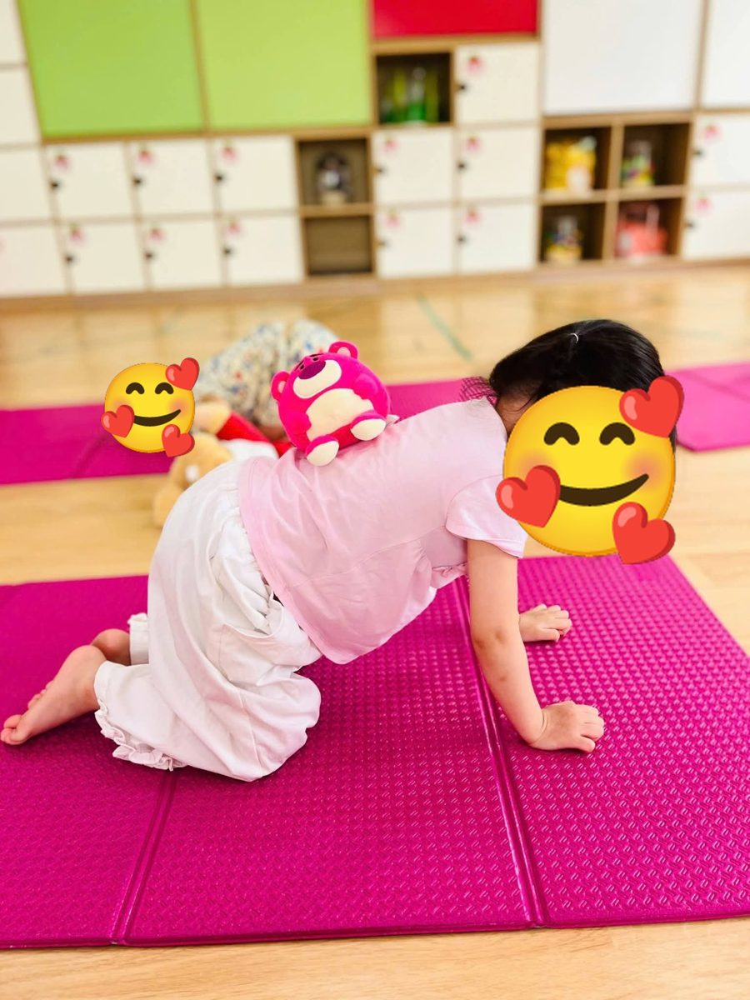
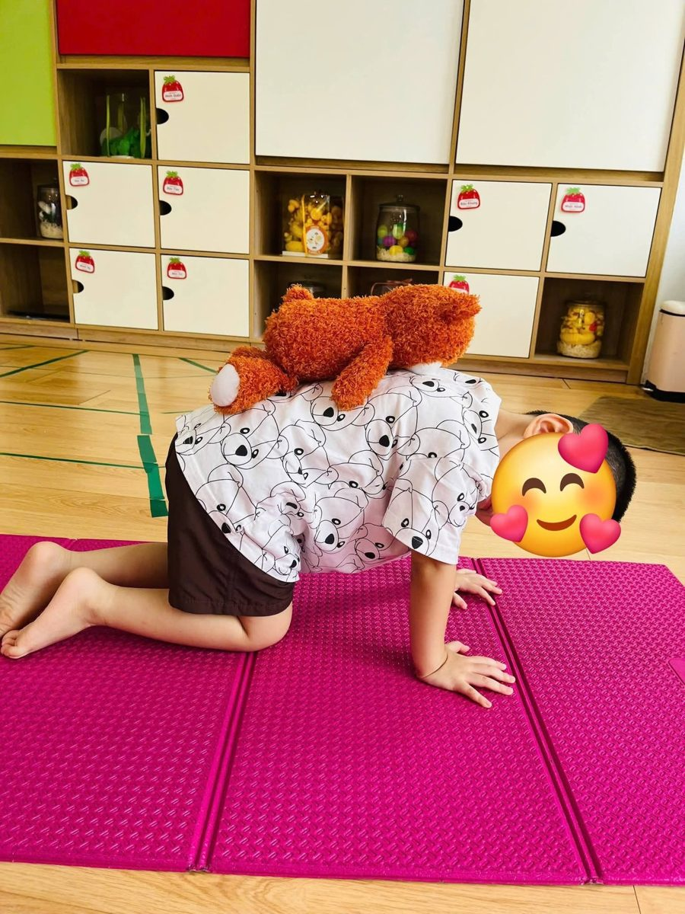
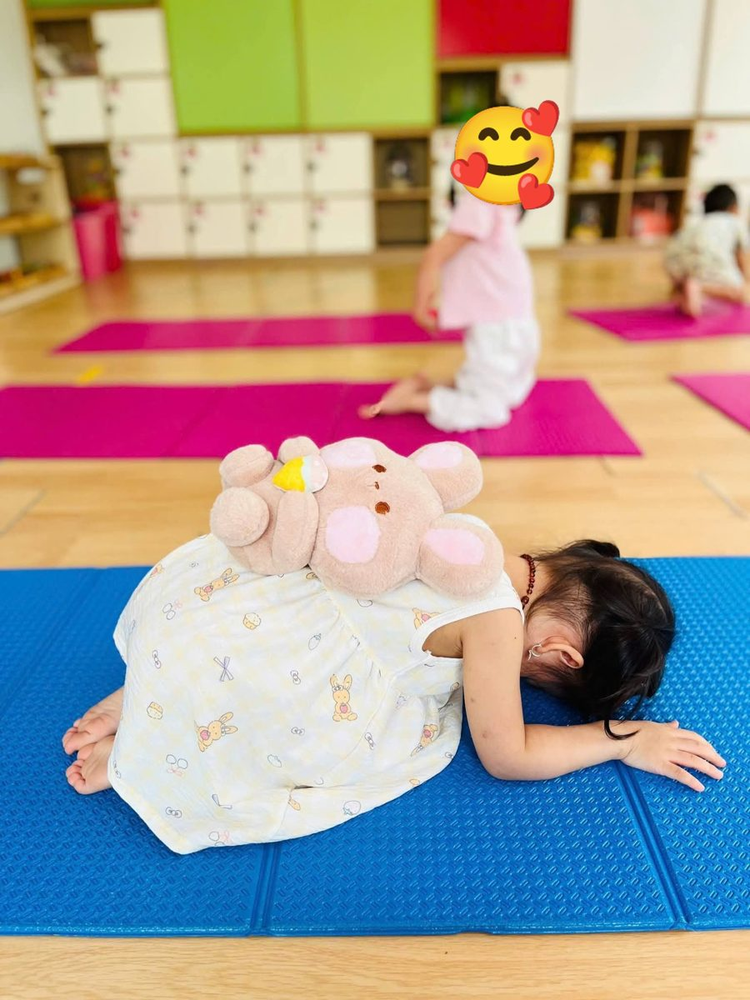
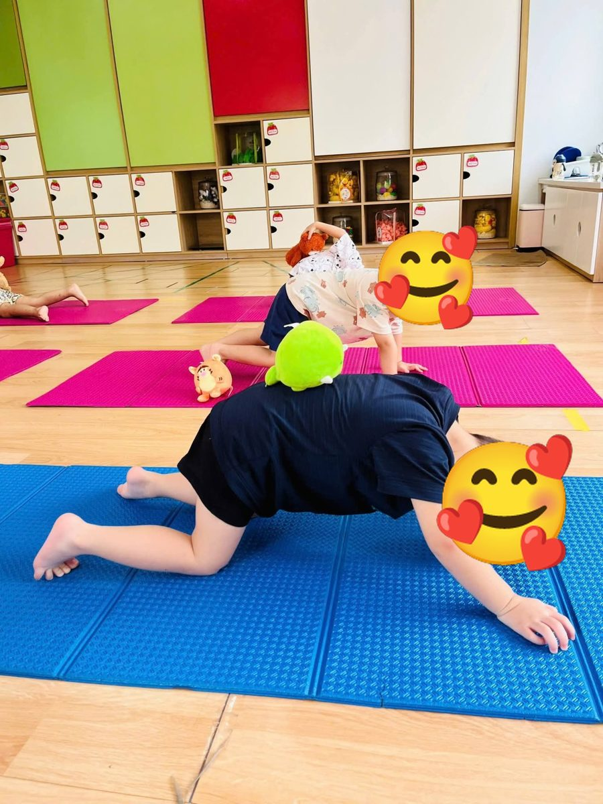
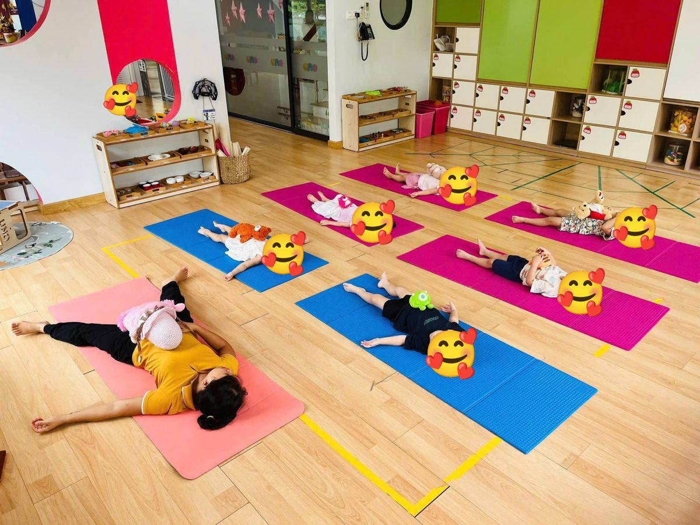

Chánh niệm · Tài liệu miễn phí
Yoga với gấu bông: khi bé có một người bạn nhỏ cùng tập

Hôm ấy, bạn nhỏ nào bước vào lớp cũng ôm theo một bạn gấu. Bạn thì gấu hồng, bạn thì gấu nâu, có bạn mang cả chú hổ con màu cam. Các con ngồi xếp bằng trên thảm, ôm gấu vào lòng và nhìn cô, háo hức như sắp được đi chơi. Gấu cũng đến lớp rồi.
Mình dạy yoga cho trẻ mầm non đã nhiều năm, và gấu bông là một trong những “trợ giảng” mình tin cậy nhất. Với bé hai, ba tuổi, những câu như “hít sâu vào bụng” hay “giữ lưng thẳng” gần như chẳng có nghĩa gì. Nhưng khi có một bạn gấu nằm trên bụng, bé tự nhìn thấy hơi thở của mình. Khi gấu nằm trên lưng, bé tự biết phải giữ lưng phẳng và cử động thật chậm, vì có ai muốn bạn mình bị ngã đâu. Đơn giản vậy thôi.
Vì sao gấu bông lại “dạy” giỏi đến vậy?
Trẻ nhỏ học bằng cơ thể. Và bằng trái tim. Một chú gấu biến bài tập thành việc chăm sóc: con ru gấu ngủ, con chở gấu đi chơi, con giữ cho gấu khỏi rơi. Vì thương bạn gấu, bé tập trung lâu hơn hẳn mà cô chẳng cần nhắc.
Gấu còn là chỗ dựa cho những bé nhút nhát. Có bé mới đi học, chưa quen cô, chưa dám nằm xuống thảm. Có gấu trong tay, con yên tâm hơn, như có một người bạn quen ngồi bên cạnh.
Và đến cuối buổi, khi cả lớp nằm thư giãn, gấu chính là lý do để bé nằm yên. Cô bảo nằm im ư? Khó lắm. Nhưng để gấu được ngủ ngon thì bé nằm im ngay, lâu hơn cả cô mong đợi.
Chuẩn bị
- Mỗi bé một bạn gấu nhỏ và mềm, cỡ 15 đến 25 cm. Gấu bé mang từ nhà thì càng tốt, con sẽ gắn bó hơn.
- Chọn gấu không có cúc, mắt nhựa hay chi tiết nhỏ dễ bung ra. Nhớ giặt gấu thường xuyên.
- Mỗi bé một tấm thảm, xếp cách nhau một sải tay. Các con tập chân trần.
- Một bản nhạc nhẹ cho lúc thư giãn cuối buổi.
Một buổi tập diễn ra thế nào?
- Chào gấu (2 phút): cả lớp ngồi xếp bằng, ôm gấu, từng bạn giới thiệu tên bạn gấu của mình rồi chắp tay chào cô.
- Thở cùng gấu (3 phút): nằm ngửa, đặt gấu lên bụng, cùng ru gấu bằng hơi thở.
- Chở gấu đi chơi (6 đến 8 phút): tư thế cái bàn, mèo và bò, em bé, lúc nào cũng có gấu trên lưng.
- Ru gấu ngủ (2 đến 3 phút): nằm thư giãn ôm gấu, nghe nhạc hoặc nghe cô kể chuyện.
- Cảm ơn gấu (1 phút): ngồi dậy, ôm gấu thật chặt và nói “Cảm ơn bạn gấu đã tập cùng con!”
8 bài tập với gấu bông
Ảnh thật từ lớp yoga mầm non của cô Sophia. Khuôn mặt các bé được che để bảo vệ các con.
-

1Thở bụng ru gấu
🧘 Thở bụng (Belly Breathing)
Cô nói với bé: “Gấu ơi, con chở gấu đi thuyền nhé. Sóng lên… sóng xuống…”
Cách làm: Bé nằm ngửa, đặt gấu lên bụng. Hít vào bằng mũi, bụng phồng lên, gấu được nâng lên như thuyền gặp sóng. Thở ra thật chậm, bụng hạ xuống, gấu cũng hạ theo. Mình thường cho bé làm năm đến tám nhịp, mắt nhìn theo gấu.
Điều cô để ý: Đây là cách dạy thở bụng nhẹ nhàng nhất mình biết. Bé không cần hiểu cơ hoành là gì. Gấu lên, gấu xuống. Thế là đúng rồi.
-

2Gấu ngủ trên ngực
🧘 Thở ra dài, thả lỏng
Cô nói với bé: “Suỵt, gấu ngủ rồi. Mình thở thật nhẹ thôi kẻo gấu thức.”
Cách làm: Bé nằm ngửa, hai tay để xuôi theo người, gấu nằm trên ngực. Cô đếm thật chậm “một, hai, ba” để hơi thở ra của bé dài hơn hơi hít vào. Bạn nào giữ được gấu nằm yên, cả lớp khẽ vỗ tay.
Điều cô để ý: Thở ra dài giúp cơ thể bé dịu lại. Với một lớp đang hiếu động, chỉ cần một phút như thế này là không khí đã khác hẳn.
-

3Chở gấu đi chơi
🧘 Tư thế cái bàn (Table Pose)
Cô nói với bé: “Lưng con là chiếc ô tô. Gấu ngồi lên rồi, mình đi công viên nào!”
Cách làm: Bé quỳ bốn chân, tay đặt dưới vai, gối dưới hông, lưng phẳng như mặt bàn. Cô nhẹ nhàng đặt gấu lên lưng con. Bé giữ yên và thở đều ba đến năm nhịp.
Điều cô để ý: Thế nào cũng có bé ngoái lại xem gấu còn trên lưng không, như cậu bé trong ảnh. Cứ để con nhìn. Đó chính là lúc con đang lắng nghe cơ thể mình.
-

4Gấu leo đồi
🧘 Tư thế con mèo, con bò (Cat Cow)
Cô nói với bé: “Đồi cao lên… đồi thấp xuống… gấu ơi bám chắc nha!”
Cách làm: Vẫn ở tư thế bốn chân, gấu nằm trên lưng. Hít vào, bé hạ bụng xuống, ngẩng nhẹ mặt lên như chú bò. Thở ra, bé cong lưng lên như chú mèo, gấu được đưa lên đỉnh đồi. Làm thật chậm ba, bốn lần.
Điều cô để ý: Có gấu trên lưng, bé tự chậm lại để gấu không trượt xuống. Gấu dạy thay cô. Suốt bài, cô không phải nhắc “chậm thôi con” lần nào.
-

5Chở bạn gấu lớn
🧘 Tư thế cái bàn, giữ thăng bằng
Cô nói với bé: “Bạn gấu này to quá! Con có chở được gấu đến khi cô đếm tới năm không?”
Cách làm: Đổi cho bé một bạn gấu to hơn. Bé giữ tư thế bốn chân, cổ thả lỏng, mắt nhìn xuống thảm. Cô đếm to từ một đến năm. Bé lớn hơn có thể thử nhấc một tay khỏi thảm trong một nhịp thở.
Điều cô để ý: Gấu to hơn thì bài tập khó hơn một chút. Chở được “bạn lớn” rồi, bé vui lắm. Tự hào nữa.
-

6Gấu ngủ trên lưng em bé
🧘 Tư thế em bé (Child’s Pose)
Cô nói với bé: “Em bé cuộn tròn đi ngủ, gấu cũng nằm ngủ trên lưng em bé.”
Cách làm: Bé quỳ, ngồi lên gót chân, cúi người về trước cho trán chạm thảm, hai tay duỗi ra trước hoặc để xuôi bên người. Cô đặt gấu lên lưng con. Bé thở chậm và cảm nhận lưng mình nở ra mỗi lần hít vào.
Điều cô để ý: Đây là tư thế nghỉ sau phần vận động. Một bạn gấu mềm trên lưng giống như một cái ôm, nên bé thả lỏng nhanh hơn hẳn.
-

7Xe chạy, xe dừng
🧘 Cái bàn và em bé nối tiếp
Cô nói với bé: “Xe chạy nào… Xe dừng! Gấu xuống ngủ thôi.”
Cách làm: Cô hô “xe chạy”, bé chống bốn chân chở gấu. Cô hô “xe dừng”, bé hạ xuống tư thế em bé, gấu vẫn nằm trên lưng. Đổi ba, bốn lần, mỗi lần chậm hơn một chút.
Điều cô để ý: Trò chơi nghe hiệu lệnh này dạy bé chờ đợi và làm chủ cơ thể. Bạn nào cũng mê. Kể cả cậu bé hay chạy nhảy nhất lớp cũng chịu dừng lại đúng lúc.
-

8Ru gấu ngủ
🧘 Thư giãn cuối buổi (Savasana)
Cô nói với bé: “Cả lớp mình và các bạn gấu cùng ngủ một giấc thật ngon nhé…”
Cách làm: Bé nằm ngửa, tay chân dang nhẹ như ngôi sao, ôm gấu trên bụng hoặc trên ngực. Cô nằm cùng các con, kể nhỏ một câu chuyện ngắn hoặc mở nhạc nhẹ trong một, hai phút. Khi kết thúc, bé ôm gấu ngồi dậy và nói lời cảm ơn gấu.
Điều cô để ý: Mình luôn nằm xuống cùng các con ở phần này. Thấy cô cũng nằm, bé hiểu rằng đây là lúc an toàn để nghỉ ngơi thật sự.
Vài điều mình muốn dặn cô giáo và bố mẹ
- Gấu rơi là chuyện bình thường. Cười cùng con, nhặt gấu lên và thử lại. Đừng biến nó thành cuộc thi xem ai giữ lâu hơn, nhất là với các bé nhỏ.
- Bé hai, ba tuổi nằm yên được một phút là giỏi lắm rồi. Đừng giữ con lâu hơn thế.
- Những lần đầu, cô là người đặt gấu lên lưng bé, đặt thật nhẹ, không ấn xuống.
- Có bé không chịu rời gấu. Không sao cả, cứ cho con ôm gấu mà tập.
- Không tập ngay sau bữa ăn. Bé mệt hay ốm thì cho con nằm ôm gấu nghỉ.
🌟 Điều các con mang về sau buổi tập
Ahimsa là yêu thương, không làm đau ai. Khi bé nhẹ nhàng đặt gấu xuống và ru gấu ngủ, con đang tập dịu dàng với một bạn nhỏ hơn mình.
Santosha là bằng lòng với những gì mình có. Gấu rơi thì nhặt lên, tư thế chưa đẹp cũng chẳng sao. Được tập cùng nhau đã là vui rồi.
Lần tới, bạn thử mời các bạn gấu vào lớp xem. Mình tin bạn sẽ thấy điều mình đã thấy: ngay cả những đứa trẻ hiếu động nhất cũng có thể nằm thật yên, chỉ vì không muốn bạn gấu của mình thức giấc.